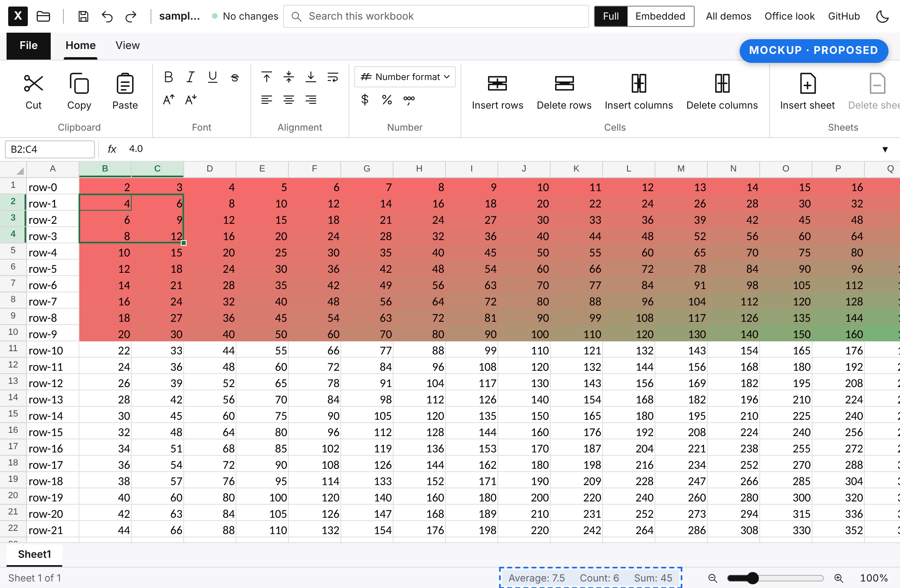
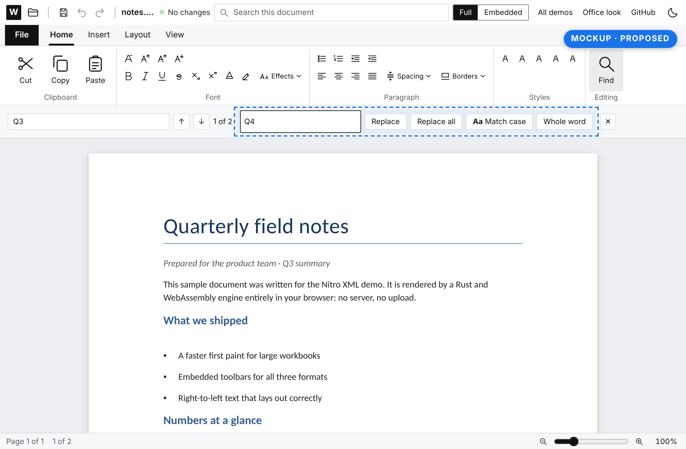

MOCKUP
See Sum, Average and Count of any selection, right in the status bar
In Excel, selecting a few cells instantly shows their total and average at the bottom right.
Open issue #540 to vote
Approve: tap 👍 on the issue · Decline: tap 👎
Edition 2026-11-16
Each card is one change that brings Nitro closer to Word, Excel and PowerPoint. Look at the picture, then vote on its issue: 👍 to approve, 👎 to decline. About 30 seconds each.

MOCKUPIn Excel, selecting a few cells instantly shows their total and average at the bottom right.
Approve: tap 👍 on the issue · Decline: tap 👎
 MOCKUP
MOCKUPSpeaker notes are how people prepare and present decks.
Approve: tap 👍 on the issue · Decline: tap 👎

MOCKUPReplace is one of the most-used editing commands in Word, Excel and PowerPoint.
Approve: tap 👍 on the issue · Decline: tap 👎